本章讨论的议题是如何清楚、有效而合理地以表格、条图和线图等方式呈现量化的数据。
前面各章节已以各种方式说明了读者是根据支持论证的强度，特别是逻辑的有效性与证据的质量来评估观点。读者理所当然地会要求证据，特别是新的证据，所以作者得确定他们轻易就能理解你的证据，并看到这些证据与所支持观点之间的关联。当证据包含许多复杂的量化的数据时更是如此，因为这些资料呈现的方式可以强化或削弱其支持的效果。因此，假如报告的证据是以许多复杂数据为基础，尤其以量化的资料为主时，则应重点关注你是否已清晰地呈现这些资料，并将证据报道替代为更具说服力的表格和图表。
某些量化的数据以视觉形式（visually）或是以语言形式（verbally）表达都同样清楚，例如：
语言形式
在1996年，男性的平均年收入是32144美元，女性则为23710美元，两者相差了8434美元。
视觉形式
表15.1：男性与女性的收入，1996年
| 男性 | $32144 |
| 女性 | $23710 |
| 差额 | $8434 |
但当数字复杂时，读者便需要更有系统的呈现方式，以便分析与理解这些数字。比如说，下面这段数据因过于复杂而不易被人记住。
在20世纪70年代，每10个家庭中有将近9个是双亲家庭——85%。但这个数字在1980年时滑落至77%，在1990年为73%，至2000年则降至68%。单亲家庭的比例上升，特别是单亲妈妈家庭。1970年仅有21%的单亲妈妈家庭，在1980年上升至18%，1990年为22%，至2000年则为23%。单亲爸爸家庭在1970年只占1%，1980年为2%，1990年为3%，2000年则占4%。家里没有成年人的家庭自1970年到2000年间均维持在3%到4%左右。
如果以表格（table）来呈现，这些数据会更清楚：
表15.2：家庭结构的改变
| 家庭形态 | 家庭数(%) | |||
|---|---|---|---|---|
| 1970 | 1980 | 1990 | 2000 | |
| 双亲 | 85 | 77 | 73 | 68 |
| 单亲妈妈 | 11 | 18 | 22 | 23 |
| 单亲爸爸 | 1 | 2 | 3 | 4 |
| 没有成人 | 3 | 4 | 3 | 4 |
或是绘成长条图（bar chart）：
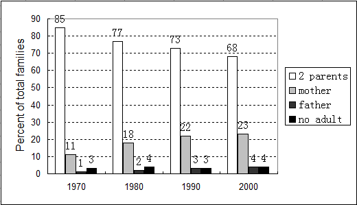
图15.1：家庭结构的改变，1970－2000年
或者是以折线图（line graph）来呈现：
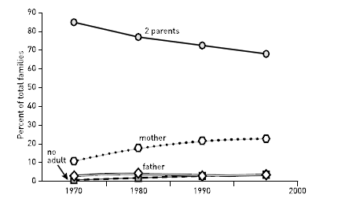
图15.2：家庭结构的改变，1970－2000年
读者可以从这些具有视觉呈现的方式看到相同的数据，但体验到不同的修辞效果（rhetorical effects）：
这些考虑都再次强调了本书第九章中提出的重点：必须以清楚、适当和合理的方式来报道证据，但任何选择都无可避免地在“编排”（spins）证据，并赋予特殊的修辞效果。作者的任务是创造出最能符合自己意图而不会误导读者的效果，而选择的呈现方式将使读者不只是回应数据，也回应了作者。因此，作者务必审慎地选择自己的格式。你必须先在表格（tables）、条图（charts）和线图（graphs）之间选择，先是建构一个清楚的证据报道，其次是产生适当的修辞效果，最后则是避免产生误导，甚至骗人的数据造假。现今有太多的研究者为了追求炫目而虚伪的视觉效果，反而忽视了数据的真实性。
不同的读者对视觉或语言形式的数据报道各有偏好，所以首先必须了解读者的需求与期待。与社会科学或自然科学领域的读者相比，文字取向的（word-oriented）的读者（通常是人文学科领域的）不太习惯以复杂图表来呈现数据。所以如果要对人文学科领域的读者报道比较简单的数据，不妨以语言形式呈现，如前面所举的薪资比较例子的文字叙述。
如果你的数据太过复杂而无法以文字来报道，可以通过表格或图表等视觉形式来呈现，像长条图或折线图（还有很多更复杂的选择，这里只提基本的呈现形式）。以下是一般性指导的两个方针：
但有些情况有条件限定。比如说，如果手上有关于全美国多种疾病和伤害的大量数据，分别以性别、种族、城市或郊区等加以分类，没有任何单一图表可以呈现这种复杂性时，那至少必须使用一表格。当在表格与图表之间选择时，你在传达什么与读者可能想要什么之间需要找到平衡点：精确（precision）与视觉效果（visual impact）。
如果选择以表格来呈现数据，请遵守下列原则（前两点也适用于条图和线图）。
例如，开始阅读时，很难看出下面的数据如何与作者想支持的观点有关。因为我们进行了很多的计算：
在过去的25年间，美国虽然拥有史无前例的经济增长，但是只带给少数人好处，大部分人的财产反而缩水了。
表15.3：收入
| 1997 | 1999 | |
|---|---|---|
| 最低20%收入组 | $10000 | $8800 |
| 次低20%收入组 | $22100 | $20000 |
| 中间20%收入组 | $32400 | $31400 |
| 次高20%收入组 | $42600 | $45100 |
| 最高20%收入组 | $74000 | $102300 |
| 最高1%收入组 | $234700 | $515600 |
通过四种变化，我们能够更快速、更清楚地了解这些数据的关联性：（1）一个诠释表格数据的前置句子（prior sentence）；（2）用来具体说明主题、包含信息的标题；（3）计算出来的主要比较项目；（4）特别强调的结果。（在表格中，数据如果为负数则以括号表示）。
在过去的25年间，美国虽然拥有史无前例的经济增长，但只给少数人带来好处，大部分人的财产反而缩水了。（观点）从1977年到1999年之间，前20%的人的收入增加了38%，位于前1%的人更增加了两倍，但是位居底层60%的人的收入却比1977年更少。（理由）
表15.4：税后年收入变化，1997－1999年（五等分位）
| 1977$ | 1999$ | ±%差距 | |
|---|---|---|---|
| 底层60%收入组 | $21500 | $20000 | (7.0) |
| 最低20%收入组 | $10000 | $8800 | (12.0) |
| 次低20%收入组 | $22100 | $20000 | (9.5) |
| 中间20%收入组 | $32400 | $31400 | (3.1) |
| 次高20%收入组 | $42600 | $45100 | 5.9 |
| 最高20%收入组 | $74000 | $102300 | 38.3 |
| 最高1%收入组 | $234700 | $515600 | 119.7 |
不要强迫读者推想作者希望他们在表格或图表中看到什么。撰写一段导读文字告诉读者要看什么，以一个标题来增加传达信息的效果。如果可以的话，再以视觉形式强调关键数据。
除了前面所提绘制表格的两个原则外，得再加上六个原则：
3.表格左边列出相关项目，数据则置于该项目的右边。
4.在表格的最上层，列出各项数据的类别。如果表格呈现的是年、月等的顺序，将它们置于表格顶层。
5.为表格左侧项目及顶层类别进行分组和排序，如此一来，概念上匹配的项目类别便能在视觉上有所分组；这可以帮助读者快速而可靠地找到作者要他们寻找的顺序来呈现任何事物。只有在项目很多，且作者并无特别看法时，才依字母或笔画顺序排列。
6.不要用水平和垂直线条分隔所有的栏与列而搞得一团乱。如果有五到七列，使用水平的浅色分隔线；如果有八到十二列，每四列以小空格或深色线隔开；如果表格相当大时，则于固定区间使用浅色底纹（如每两列或每五列为一区间等等）。
7.按四舍五入的原则除去不重要的差别，使数字顺应读者的需求。如果千位数内的差距并不会影响决策与判断，那2123000和2124000的微小差异就没什么意义。多数情形下，你可以将两者都呈现为210万，这可以让读者易于了解。
举例而言，假如要在表15.5中告诉读者，英语系国家在最近几年内失业人数减少最多。找出相关的数据会是一件容易的事吗？
表15.5：主要工业国的失业率
| 1990 | 2001 | 差距 | |
|---|---|---|---|
| 澳大利亚（Australia） | 6.7 | 6.5 | (0.2) |
| 加拿大（Canada） | 7.7 | 5.9 | (1.8) |
| 法国（France） | 9.1 | 8.8 | (0.3) |
| 德国（Germany） | 5.0 | 8.1 | 3.1 |
| 意大利（Italy） | 7.0 | 9.9 | 2.9 |
| 日本（Japan） | 2.1 | 4.8 | 2.7 |
| 瑞典（Sweden） | 1.8 | 5.1 | 3.3 |
| 英国（UK） | 6.9 | 5.1 | (1.8) |
| 美国（USA） | 5.6 | 4.2 | (1.4) |
表15.6用个小标题让论点更清楚，且不以国名的字母排序，而以语系分组，再根据每组失业率的变动程度来排序，并强调四个相关的数据。
表15.6：失业率的变化
| 英语系国家vs.非英语系国家 | |||
|---|---|---|---|
| 1990 | 2001 | 差距 | |
| 澳大利亚（Australia） | 6.7 | 6.5 | (0.2) |
| 美国（USA） | 5.6 | 4.2 | (1.4) |
| 加拿大（Canada） | 7.7 | 5.9 | (1.8) |
| 英国（UK） | 6.9 | 5.1 | (1.8) |
| 法国（France） | 9.1 | 8.8 | (0.3) |
| 日本（Japan） | 2.1 | 4.8 | 2.7 |
| 意大利（Italy） | 7.0 | 9.9 | 2.9 |
| 德国（Germany） | 5.0 | 8.1 | 3.1 |
| 瑞典（Sweden） | 1.8 | 5.1 | 3.3 |
如果读者从你的数据中获得一个图像比精确的数字更重要，那么图表的选择就优于表格。下面哪个图像说的故事比较有力？
表15.7：公共和私人健康花费的上升，1960－1999年（10亿美元）
| 1960 | 1970 | 1980 | 1990 | 1999 | |
|---|---|---|---|---|---|
| 私人 | 20.1 | 45.5 | 141.0 | 413.2 | 662.1 |
| 公共 | 6.6 | 27.6 | 104.8 | 282.4 | 548.1 |
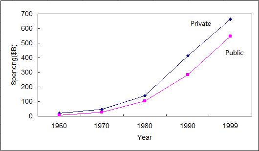
图15.3：公共和私人健康花费的上升（10亿美元），1960－1999年
我们现在需要两个专门术语——轴（axis）和变量（variable）——来解释条图和线图如何运作，以及如何绘制清楚而合理的图表。
轴：线图和条图有两个形式要素，即垂直的Y轴和水平的X轴。
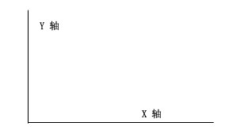
图15.4
变数：线图和条图代表两种类型的内容，都称为变量。一是自变量（independent variables），另一是依变量（dependent variables）。
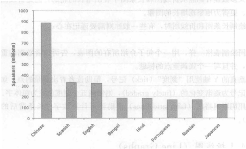
图15.5：超过一亿人所使用的语言
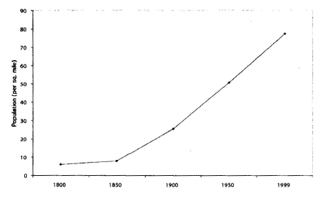
图15.6：美国人口密度的增长（1800－1999年）
大多数读者都能从折线图和长条图中看出增长的轮廓，但是折线图能更清楚、更省力地呈现增长的图像。
绘制长条图和折线图时，有些一般原则需要谨记在心：
绘制折线图时，有三个特别的原则：
比较图15.7和图15.8。哪个更容易理解？为何该折线图能帮你看懂它的数据？
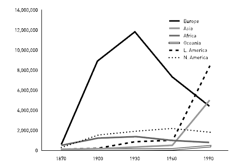
图15.7：美国的外来移民（1870–1990年）
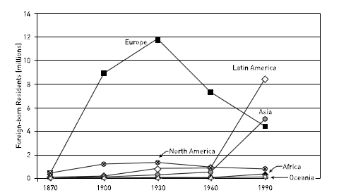
图15.8：美国的外来移民（1870–1990年）
我们前面提过，可以选择长条图来比较单一时间点上分散的依变量。长条图也可呈现不同时间点的数据，但图像会变得极为复杂，让读者难以看出其间的差异。实际上，你可以用一系列的小长条图来替代单一的大长条图。比较下面的图15.9和上面的图15.8：
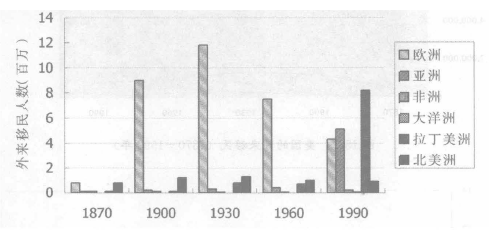
图15.9：美国的外来移民（1870–1990年）
如果你的X轴表示的不是时间单位，大体上就可以自由排列X轴上的直条顺序，但仍须遵守以下几点原则：
对照图15.10与图15.11，假如这些数据是用来支持下面这个观点的：
世界上大多数的沙漠区域都集中在北非和中东：
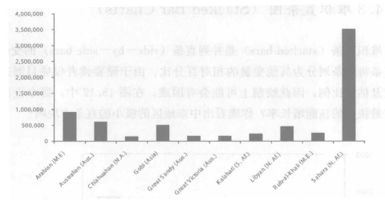
图15.10：世界十大沙漠
图15.10是按字母次序排列而成，但无法帮助读者看出支持这个观点的数据。我们看不到与这些长条相关的数据，也没有方格线帮我们将数据连接到Y轴。而Y轴也没有刻度记号。相对地，图15.11将这些长条排列成有意义的图形，以支持这个观点：
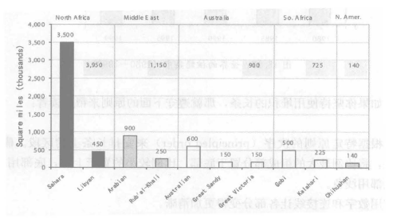
图15.11：大沙漠的世界分布
堆积直条（stacked bars）是并列直条（side-by-side bars）的变化。堆积直条将直条划分为其他变量的相对百分比。由于硬要读者仅凭目测来做出比较及估计比例，因此绘制上可能会有困难。在图15.12中，哪个世界地区拥有最快速的核能增长率？你能看出中东地区的极小的直条方块吗？
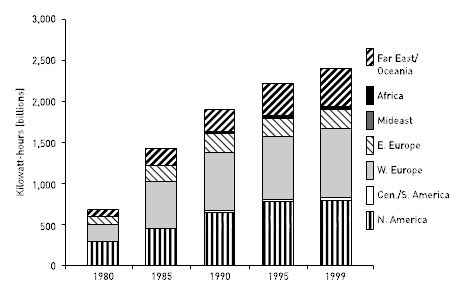
图15.12：世界的核能集中（1980–1999）
如果你坚持使用堆积的长条，那就遵守下面的原则来帮助读者：
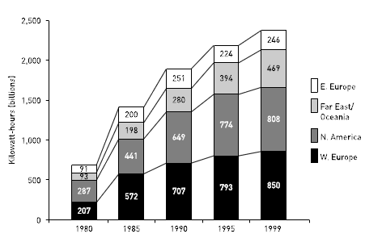
图15.13：最大的核能发电国家
有些研究者会将柱形图倒向一侧而变成横条图（horizontal bar chart）。此时Y轴变成水平，X轴则转为垂直。横条图唯一胜过柱形图的优点是在排版方面：你可以在长条旁边放上各类项目的全名。
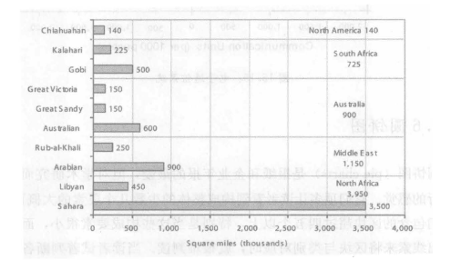
图15.14：世界大沙漠的分布
横条图的一个变化是中央分隔横条图（centrally divided horizontal bar charts）。它将两个依变量分别置于中央线的两侧，并列出若干自变量。同样的数据也能以并列垂直长条图（side-by-side vertical bar chart）来呈现，但就排版印刷上来说比较困难。
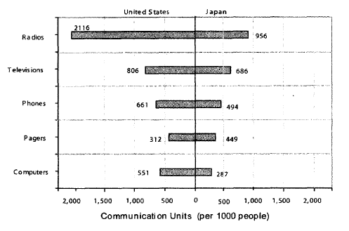
图15.15：电子通信系统
圆饼图（pie charts）是报纸和企业年报的最爱，但对学术研究而言则有点外行的感觉。它们顶多让读者看到构成整体的少数几个要素的大概百分比。当它们包含的区块超过四五个以上，特别是当这些构成要素很小，而读者必须找出线索来将区块与类别对应时，就很难判读。当读者试着判断各区块的相对大小时，往往容易搞错。
以下面这个圆饼图为例，你能够轻易地比较出说日语和北印度语的人数吗？汉语和葡萄牙语使用者之间的比例是多大呢？
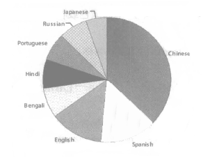
图15.16：使用者超过一亿人的语言
现在用较简单的长条图来回答同样的问题：
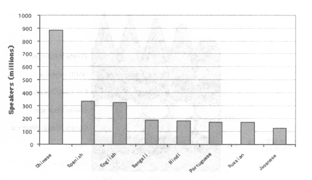
图15.17：使用者超过一亿人的语言
如果你坚持使用圆饼图，这里有几个原则：
几乎每一种办公室软件包，现在都包含让你能以三维空间的多重色彩和形状来创造出华丽图表的软件。我们的建议很简单：不要这么做。只有极少数够复杂的数据才需要以立体图表呈现。通常，第三个维度纯粹是装饰性的，与重点无关。譬如说，你只要在最流行的电子表格程序（spreadsheet program）中敲几下键盘，就可以弄出像下面这样的“圆锥图”（field of cones）。
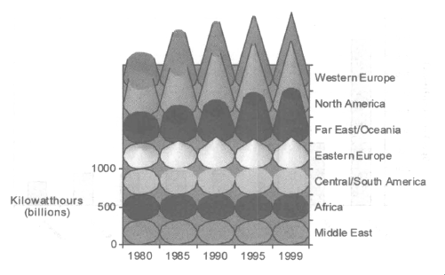
图15.18：世界核能的集中（1980–1999）
然而，软件包中还有一种比这类过度装饰性的图表更糟糕的选择：在图表中使用绘画图样来代替组成要素的符号象征图（iconic graphs）。你在《今日美国》（USA Today）杂志或其他大众出版物中可以看到：在长条图中以不同高度的美式足球球员图像来代表年薪，或以不同尺寸的牛排来表示每年的牛肉消费量。这些图表看起来或许相当炫目、有趣，但研究报告的读者需要的不是炫目或有趣：他们要的是有效呈现的实际信息。
如果你将石油进口以下面这种方式表达，你将会失去读者的信赖。
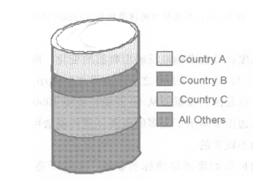
图15.19：石油进口（1980–1990）
当你因为图形的特殊效果而选择使用时，切记你的修辞决定是合乎道德的。只要你以视觉形式呈现数据，就得在“修辞目的”与“你对事实及其外观合理性的责任”之间取得平衡。表格、条图及线图似乎是相当客观的，但正因为如此，所以它才能够愚弄那些缺少经验的读者。然而，如果你企图扭曲图形来迁就论点，这些图表将会招致有经验的读者的怀疑。
不幸的是，有时候很难区别有效的修辞效果与不合理的操作。举例来说，比较图15.20中的两个长条图。两个长条图的数据完全相同，但看看这些长条的坡度：
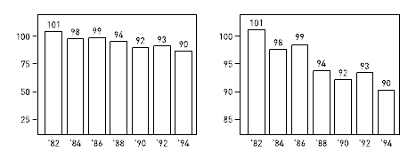
图15.20：华盛顿市的污染指数（1982–1994）
左图的下降幅度比较能准确地反映出数据的变化，因为测量值从零开始，使得1990年的101与2002年的90之间的差异相对缩小。而在右图中，下降的坡度陡峭许多，这是因为度量值从80开始，使得1990年和2002年的差异被放大。结果，右边图表暗示了更多的改善，这种说法可能会误导某些读者，甚至可以将其视为不诚实的。
图15.20中的长条如果清楚地标示数据，那它所造成的扭曲将会减少。但是当作者截去图表的垂直轴让坡度变得更陡时，便可能逾越了诚实的界限。对读者来说，折线图中的坡度最能突显数据的形态：
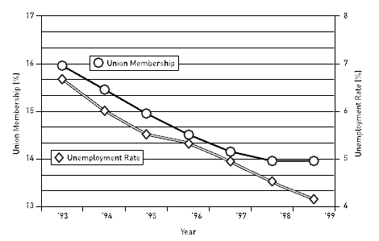
图15.21：工会成员与失业率，1993–1999年
另一方面，要区分出什么是“客观”（objective）与“合于伦理”（ethical）不是件简单的事。假如你是个环境科学学者，你知道其他专家会把这些看起来细微的下降视为具有高度的重要性。如果你确定对统计不在行的读者会将左图中细微的视觉差异看成不重要的变化的话，那么右图中更大的视觉变化将能更准确地传达真正的科学意义。在这个例子中，很难判断哪个折线图比较诚实。
就像任何形式上的手法（formal device）一样，以图表来呈现数据可以帮助你以崭新的方式看待事物、看出趋势、发现新的关系，或认识到特定数据的重大意义。有些数学奇才只要凭数字就能看出端倪。但我们则需要视觉的呈现方式，才能在一组数字中看出端倪。所以不要将图表看成只是向读者展现大量数据的有力方式。尽情发挥你的想象力，运用软件的功能来尝试各种数据的组合及呈现方式。你永远无法预测读者看过那些图表后会有怎样深刻的理解。我们展示数据的目的不仅是让它们更清楚，它们还可以帮助我们以全新的方式来看待它们。